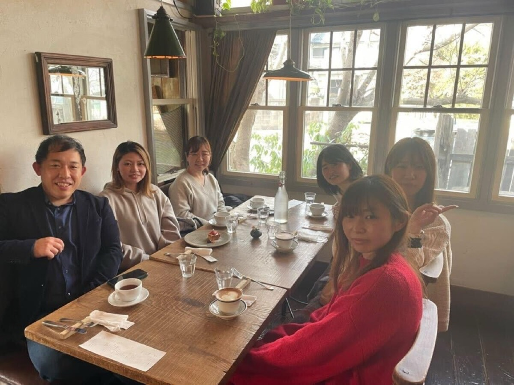
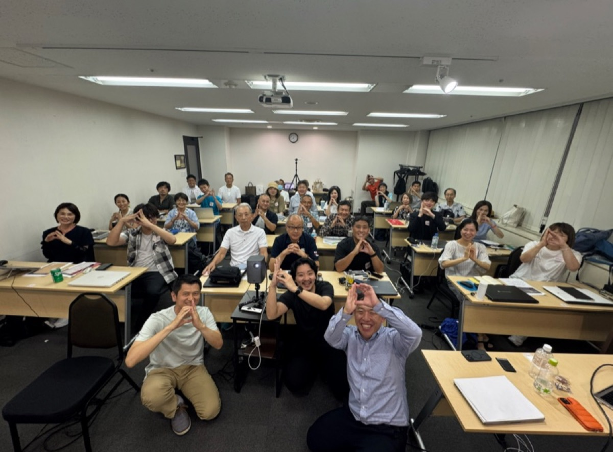
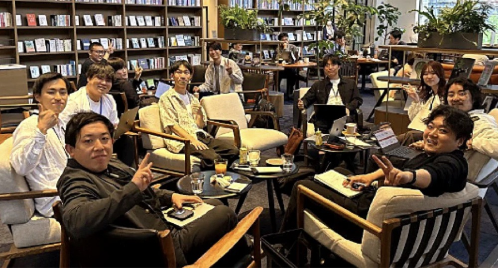
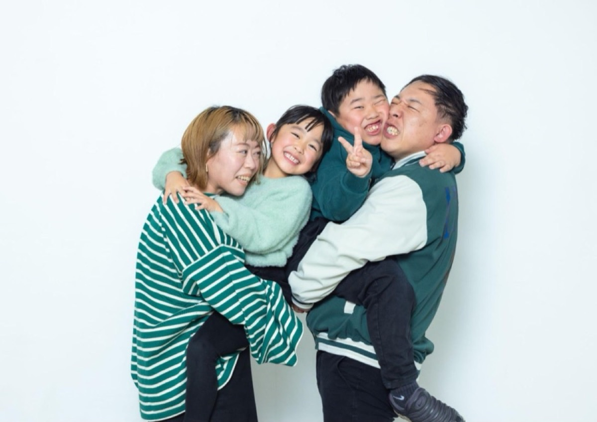

My Story
私が、この仕事をしている理由
実家は寿司屋でした。父が握り、母が経理。毎年3月になると、母がレシートの山と格闘しているのを見て育ちました。数字が苦手な母を助けたくて、高校は商業科へ。簿記を選びました。
高校2年生のとき、実家の確定申告を自分で作って提出しました。学校の先生や商工会議所に聞きながら。
人の苦手を、自分の好きで解決する。
やっていることは、あのときから変わっていません。
やっていることは、あのときから変わっていません。
そのあとはガソリンスタンドで4年間、夜行バスで研修に通って営業成績を100位から5位へ。ラーメン店のエリアマネージャーを経て、31歳ではじめて経理の実務に触れました。転機は「経理担当が突然辞めた会社」に助っ人で入ったこと。気づけば現場の相談が全部私に集まり、顧問税理士の先生に「独立した方がいい」と背中を押されて、いまの会社を作りました。
一度、会社を急に大きくしようとして人を傷つけたことがあります。お金の失敗は取り返せますが、人の心はくしゃくしゃにした紙と同じで、元には戻りません。だからいまは、スタッフが「この会社で働けてよかった」と言える会社をつくることを、一番の目標にしています。
あのとき母に渡したかったのは、きれいな帳簿ではなく「安心」でした。いまはそれを、目の前の社長に渡しています。



